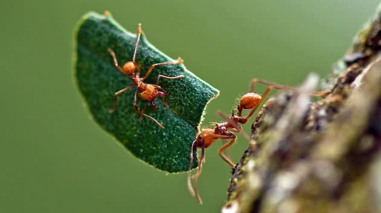

Você sabia que as formigas não comem as folhas que carregam diretamente. Elas se alimentam-se do fungo que elas cultivam dentro do formigueiro.
As formigas trabalham armazenando insumos durante o verão para que no inverno possam ficar protegidas dentros de seu formigueiro. Elas conseguem carregar um peso até 100 vezes maior do que o seu próprio peso.
As formigas também são insetos sociais que vivem em colônias, onde os indivíduos fazem as divisões das tarefas. Em uma colônia encontramos a rainha, as operárias e os machos.
As formigas já ocuparam quase todos os terrenos em nosso planeta. Com exceção apenas da Antártica e do Ártico. E existem mais de 10.000 espécies de formigas encontradas em todo o planeta.